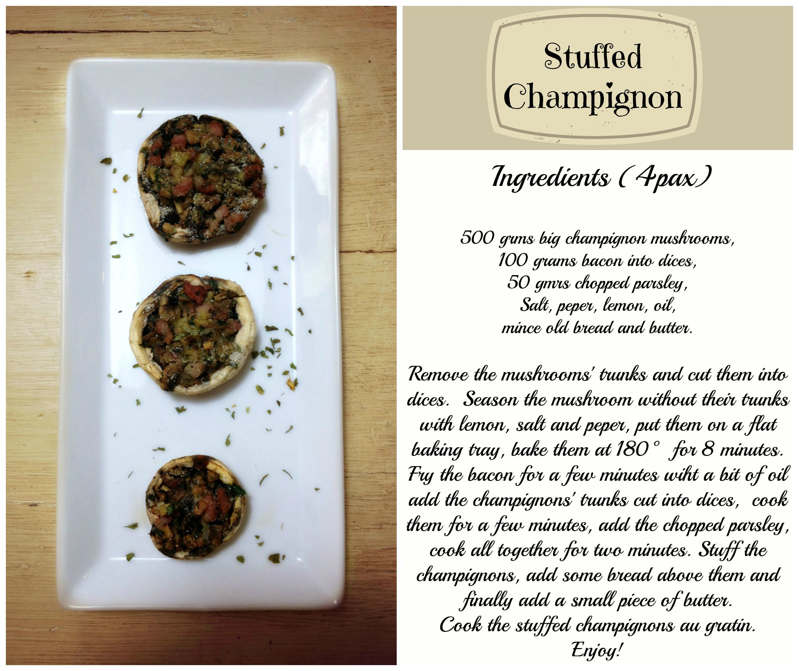

Stuffed champignons¶

- Serves: 4
- Type: Starter - Appetizer
Background¶
This is a nice recipe that can be served as appetizer for cocktails or as starter. It is simple and can be also vegetarian, instead to use bacon you can use little parmesan dices or old gouda cheese for the vegetarian version and for the meat-eating people you can replace the bacon with dices of speck, serrano ham, raw ham (prosciutto crudo) or just simple ham. Also if you want to intensify the taste you can use a teaspoon of ground cumin. I tried this new recipe after a short vacation in Barcelona (wonderful city!), I ate these stuffed champignons in a tapas bar and I was delighted by them, since then I have been preparing when I have guesses at home and they are always satisfied.